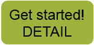

|  |
We need you to look at images taken by a network of automated cameras for signs of changing seasons. By identifying images with changing leaves, blooming flowers, and other easy-to-identify features, you help us to better understand how plants are responding to climate change.